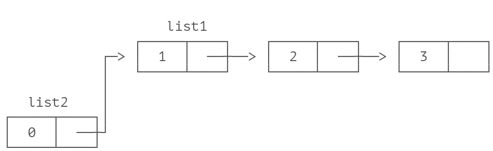
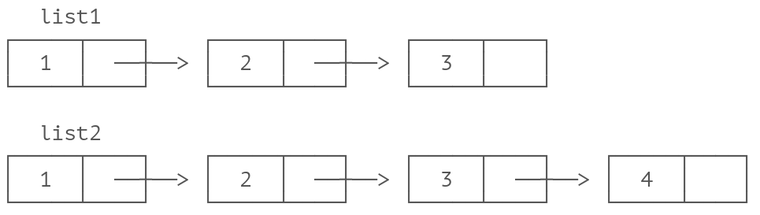

iex> fizzbuzz(15) #Multiplo de 5 y 3
"Fizzbuzz"
iex> fizzbuzz(6) #Multiplo de 3
"Fizz"
iex> fizzbuzz(10) #MUltiplo de 5
"Buzz"
iex> fizbuzz("Holi")
"Qué paso amiguito?"
Tarea
Tarea
Recursión
Recursión
Implementación de Listas (Necesario tener claro como funcionan las listas)
Implementación de Listas (Necesario tener claro como funcionan las listas)
Las listas en Elixir pueden ser vacias ó pares inmutables head/tail
donde el head contiene un valor y el tail es en si misma una lista
Ejemplos:
iex> [ head | tail ] = [ 1, 2, 3 ] # => [1, 2, 3] iex> head 1 iex> tail [2, 3]
Prepending en listas es Rapido
Prepending en listas es Rapido
iex> list1 = [1, 2, 3] iex> list2 = [0 | list1]

Appending en listas es Lento
Appending en listas es Lento
iex> list1 = [1, 2, 3] iex> list2 = list1 ++ [4]

Insertar elementos es Lento
Insertar elementos es Lento
iex> list1 = [1, 3, 4] iex> list2 = List.insert_at(list1, 1, 2) # insertando 2 en la segunda posicion iex> [1, 2, 3, 4]

Implementación de Listas
Implementación de Listas
- Elixir son pares head/tail
- Inmutabilidad hacen que sean eficientes en memoria
- Prepending es RAPIDO
- Appending es LENTO
- Insertando elementos puede ser lento
- Leer la lista entera puede ser lento
Recursion
Recursion
Recurrencia, recursión o recursividad es la forma en la cual se especifica un proceso basado en su propia definición. – Wikipedia
De hecho, recursión es una de las ideas centrales de ciencia de computación. Resolver un problema mediante recursión significa que la solución depende de las soluciones de pequeñas instancias del mismo problema. – Recursión (ciencias de computación) - Wikipedia
Disminuye y conquista
Disminuye y conquista
Disminuye y conquista
Disminuye y conquista
Disminuye y conquista es una tecnica para reducir un problema a su forma más simple y comenzar a resolverlo de forma incremental. AL hacer esto, encontramos la solución más obvia de una parte del problema. Apartir de ahí comenzamos a conquistar progresivamente, incrementando el problema paso a paso. Experimentemos calculando la longitud de una lista.
Longitud de una lista
Longitud de una lista
#mi_lista.ex defmodule MiLista do def longitud([]), do: 0 def longitud([_]), do: 1+0 def longitud([_,_]), do: 1+1+0 def longitud([_,_,_]), do: 1+1+1+0 end iex>MiLista.longitud([]) 0 iex>MiLista.longitud(["1"]) 1 iex>MiLista.longitud([1,2]) 2 iex>MiLista.longitud([3,2,1,0]) Bug!!
Partiendo de la solución más simple
Partiendo de la solución más simple
defmodule MiLista do def longitud([]), do: 0 def longitud([_]), do: 1+longitud([]) def longitud([_,_]), do: 1+longitud([_]) def longitud([_,_,_]), do: 1+longitud([_,_]) end # Ahora observamos que existe un patrón que empieza en la segunda defición de longitud. # Habra manera de reducir paso por paso la longitud de cualquier lista ?
Solución (añadiendo definición de error)
Solución (añadiendo definición de error)
defmodule MiLista do def longitud([]), do: 0 def longitud([_ | tail]), do: 1+longitud(tail) def longitud(_), do: "Que paso amiguito?" end
Cool, pero que pasa si?
Cool, pero que pasa si?
iex>MiLista.longitud(1..1_000_000) =1+longitud(2..1_000_000) =1+(1+longitud(3..1_000_000)) =1+(1+(1+longitud(4..1_000_000))) =1+(1+(1+(1+(1+(1+(1+(1+(1+(1+(.......))))))))))
El consumo de memoria puede ocasionar el colapso total de nuestro sistema. Stackoverflow
Arreglemos la función (Tail Call Optimization)
Arreglemos la función (Tail Call Optimization)
Para evitar stackoverflow, elixir nos aconseja que lo ultimo que hagamos en una función recursiva es ejecutar una función. Pero en nuestro caso necesitamos que la función se llame a si misma al final de su ejecución.
defmodule MiLista do def longitud([]), do: 0 def longitud([_ | tail]), do: longitud(tail) def longitud(_), do: "Que paso amiguito?" end # Ahora necesitamos ir acumulando resultados parciales cada vez que se reduzca # (esto nos obliga a crear un nuevo parametro que sirva como acumulador)
defmodule MiLista do def longitud([], acc), do: 0 def longitud([_ | tail], acc), do: longitud(tail, acc) def longitud(_, _), do: "Que paso amiguito?" end
# Agregamos la suma con 1, y devolucion de aculumador en la caso más basico defmodule MiLista do def longitud([], acc), do: acc def longitud([_ | tail], acc), do: longitud(tail, acc+1) def longitud(_, _), do: "Que paso amiguito?" end iex> MiLista.longitud([],0) #0 iex> MiLista.longitud(["1"],0) #1 iex> MiLista.longitud(["1", "2"], 1) #3 #Error. Significa que siempre debemos tener cuidado de ingresar siempre 0 #como segundo parametro :/
Que sea más facil de utilizar
Que sea más facil de utilizar
# cambiamos la funcion para que sea privada y sea utilizada por otra función defmodule MiLista do def longitud(lista) when lista |> is_list, do: _longitud(lista, 0) def longitud(_), do: "Que paso amiguito?" defp _longitud([], acc), do: acc defp _longitud([_ | tail], acc), do: _longitud(tail, acc+1) end
Más ejemplos
Más ejemplos
iex> MiLista.suma([1,2,3,4,5,6]) 21 iex> MiLista.maximo([4,2,16,9,10]) 16 iex> MiLista.minimo([4,2,16,9,10]) 2 iex> MiLista.map([1,2,3,4,5], &(&1*&1)) [1,4,9,16,25] iex> MiLista.fibonacci([1,1], 7) [1,1,2,3,5,8,13] iex> MiLista.tribonacci([1,1,1], 7) [1,1,1,3,5,9,17]
Divide y conquista
Divide y conquista
Currying (Pre-Debugging)
Currying (Pre-Debugging)
"Chaining small functions in sequence" (rather than having a large function do a lot of stuff)
– Haskell Curry
Divide y conquista
Divide y conquista
Divide y conquista es una tecnica que trata sobre separar el problema en 2 o más partes. Por ejemplo, si tramos de obtener todo que necesitemos de una base de datos en un solo query, el query select sera dificil de escribir y mantener. En cambio si dividimos el query en querys pequeños e independientes el codigo se vuelve facil de programar y mantener.
Ejemplo: Ordenar una lista (merge sort)
Ejemplo: Ordenar una lista (merge sort)
2 funciones:
- Si tenemos 2 listas ordenadas, se puede crear facilmente una lista ordenada de los elementos de ambas listas.
- Una lista grande puede ser separada en 2 listas más pequeñas. (Procesar listas de menor longitud es más facil)
1era función (merge)
1era función (merge)
merge([5, 9], [1, 4, 5]) [1 | merge([5, 9], [4, 5])] [1, 4 | merge([5, 9], [5])] [1, 4, 5 | merge([9], [5])] [1, 4, 5, 5 | merge([9], [])] [1, 4, 5, 5, 9]
1era funcion (merge)
1era funcion (merge)
defmodule Ordenar do
defp merge([], lista_b), do: lista_b
defp merge(lista_a, []), do: lista_a
defp merge([head_a | tail_a], lista_b = [head_b | _]) when head_a <= head_b do
[head_a | merge(tail_a, lista_b)]
end
defp merge(lista_a = [head_a | _], [head_b | tail_b]) when head_a > head_b do
[head_b | merge(lista_a, tail_b)]
end
end
2da funcion (ascendente)
2da funcion (ascendente)
defmodule Ordenar do
def ascendente([]), do: []
def ascendente([a]), do: [a]
def ascendente(lista) do
mitad = div(Enum.count(lista), 2)
{lista_a, lista_b} = Enum.split(lista, mitad)
merge(
ascendente(lista_a),
ascentente(lista_b)
)
end
end
Paso por paso
Paso por paso
ascendente([9,5,1,5,4]) merge(ascendente([9,5]), ascendente([1,5,4])) merge(merge([9], [5]), merge(ascedente([1,5], [4]))) merge(merge([9], [5]), merge(merge([1], [5]), [4])) merge([5, 9], merge([1, 5], [4])) merge([5, 9], [1, 4, 5]) [1, 4, 5, 5, 9]
Gracias ˊ・ω・ˋ